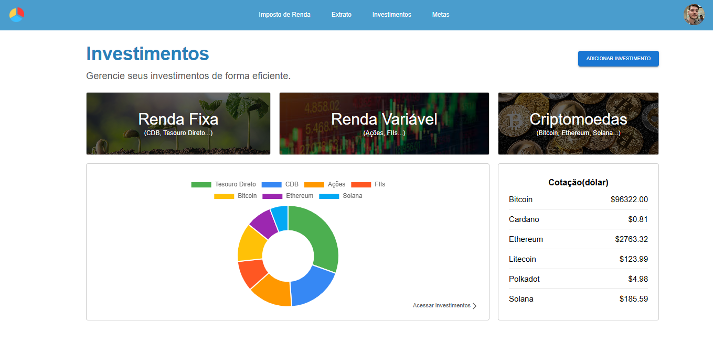
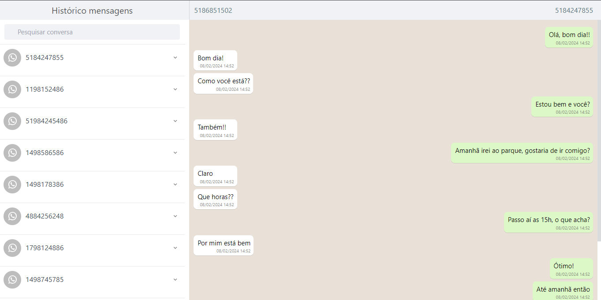

Gabriel
Matte Elias
Desenvolvedor Fullstack com 4 anos de experiência em interfaces modernas e responsivas. Atuo no setor financeiro com foco em React, Node.js, performance e UX.
Gerenciador Financeiro

Aplicativo de gerenciamento financeiro desenvolvido em React integrado a um backend feito em JAVA + banco de dados PostgreSQL, com funcionalidades para controlar receitas, despesas, metas financeiras e relatórios interativos. Organize suas finanças de forma intuitiva e acompanhe seu progresso com gráficos dinâmicos e uma interface moderna.
Clone Whatsapp

Clone do WhatsApp desenvolvido com React, focado em comunicação em tempo real e alta performance. A aplicação utiliza WebSocket para envio e recebimento instantâneo de mensagens, garantindo uma experiência fluida. Para otimização, foram aplicados useMemo e useCallback, reduzindo re-renderizações desnecessárias em cenários com grande volume de dados. Também foram implementadas técnicas como virtualização de listas e lazy loading, permitindo lidar com centenas de conversas e milhares de mensagens sem degradação de performance.
Yu-Gi-Oh!

Projeto sobre o famoso jogo de cartas "Yu-Gi-Oh!", possui uma página de home e uma página exclusiva para apresentar as cartas. Além de exibir a descrição, atributos e outras informações de cada carta, também inclui um sistema de busca por nome e tipo de carta, que é integrado a uma API externa especializada no tema tornando a experiência ainda mais prática para os fãs. O projeto foi feito utilizando React e a biblioteca Material-UI (MUI), para criar uma interface moderna e responsiva.
- Desenvolvimento e manutenção de aplicações web com React (Hooks, Redux, Context API), TypeScript, TailwindCSS e Material UI, garantindo responsividade e performance
- Integração com APIs RESTful em colaboração direta com o time de back-end, contribuindo para a eficiência da comunicação entre as camadas da aplicação
- Implementação de interfaces totalmente responsivas e cross-browser com foco em experiência do usuário (UX) em múltiplos dispositivos
- Backend com Node.js: WebSocket, integração com serviços externos e implementação de soluções completas end-to-end
- Trabalho com bancos de dados SQL Server e Oracle: criação e otimização de consultas SQL
- Participação no ciclo completo de desenvolvimento: levantamento de requisitos, planejamento técnico, implementação, testes e deploy
- Experiência com versionamento de código (Git) e cerimônias ágeis (dailies, plannings, retrospectivas)